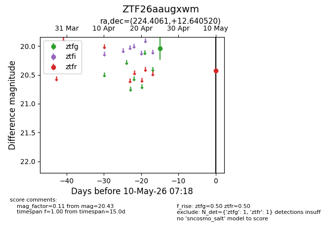
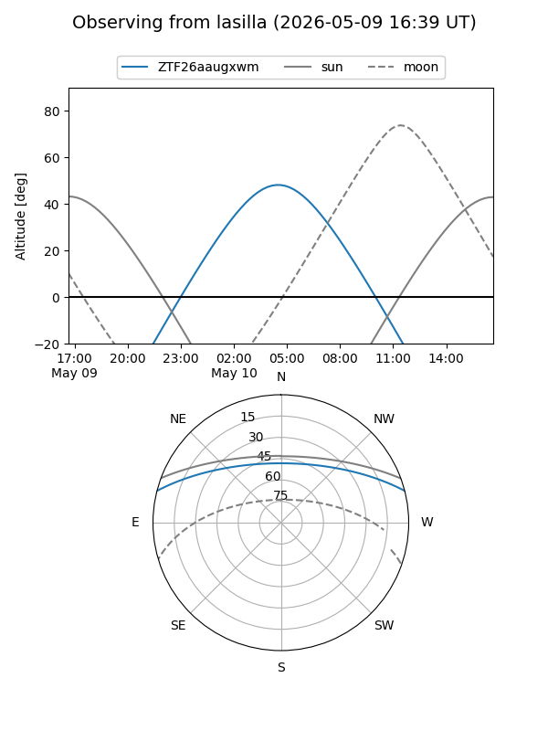
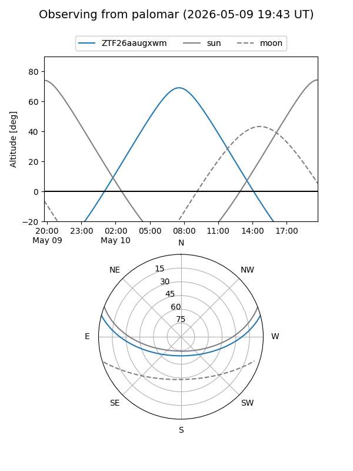
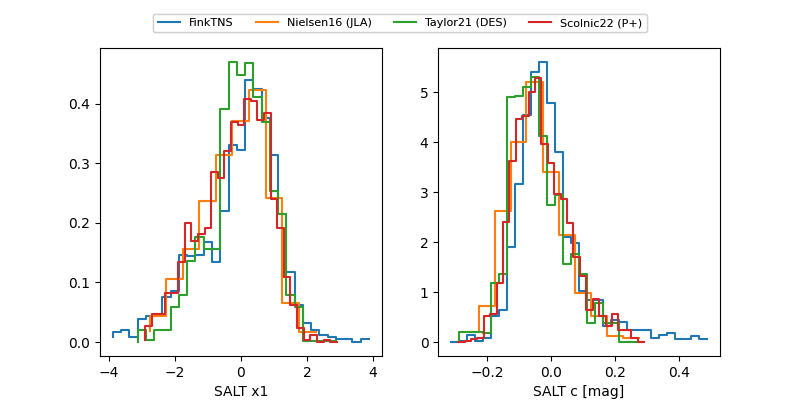

ZTF26aaugxwm
Target ZTF26aaugxwm at 2026-05-10 07:19
Aliases and brokers:
FINK: link
Lasair: link
ALeRCE: link
alt names
ZTF26aaugxwm (ztf,fink_ztf)
Coordinates:
equatorial (ra, dec) = 224.4061,+12.64052
equatorial (HMS+DMS) = 14:57:37.45,+12:38:25.87
galactic (l, b) = (13.0700,+57.12559)
Flags:
Photometry:
last ztfg=20.04, ztfr=20.43
1 ztfg, 1 ztfr detections
Lightcurve

Visibility


Additional plots
